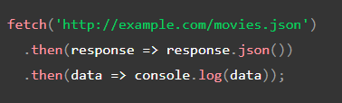

The Fetch API provides a JavaScript interface for accessing and manipulating parts of the HTTP pipeline, such as requests and responses. It also provides a global fetch() method that provides an easy, logical way to fetch resources asynchronously across the network.
Here we are fetching a JSON file across the network and printing it to the console. The simplest use of fetch() takes one argument — the path to the resource you want to fetch — and does not directly return the JSON response body but instead returns a promise that resolves with a Response object. The Response object, in turn, does not directly contain the actual JSON response body but is instead a representation of the entire HTTP response. So, to extract the JSON body content from the Response object, we use the json() method, which returns a second promise that resolves with the result of parsing the response body text as JSON.